News and Events
JuLy 2019
Our paper "Ground-to-aerial Image Geo-localization with a Hard Exemplar Reweighting Triplet Loss" is accepted by ICCV 2019.
June 2019
Our paper "Stereo Matching Using Multi-level Cost Volume and Multi-scale Feature Constancy" is accepted by IEEE TPAMI.
Feburary 2019
Two papers on Stereo Image Super-Resolution and 3D Generative Modeling are accepted by CVPR 2019.
Brief Bio
Yulan Guo received his PhD degree from NUDT in 2015. He was a visiting Ph.D. student with the University of Western Australia from 2011 to 2014. He worked as a post-doctorial research fellow with the Institute of Computing Technology, Chinese Academy of Sciences from 2016 to 2018. He has authored over 80 articles in journals and conferences, such as the IEEE TPAMI and IJCV. His current research interests focus on 3D vision, particularly on 3D feature learning, 3D modeling, 3D object recognition, and 3D biometrics. Dr. Guo received the CAAI Outstanding Doctoral Dissertation Award in 2016. He served as an associate editor for IET Computer Vision, a guest editor for IEEE TPAMI, a PC member for several conferences (e.g., CVPR, ICCV, ACM MM, IJCAI, AAAI, SIGGRAPH Asia), a reviewer for over 30 journals, and an organizer (as co-chair) for a tutorial in CVPR 2016 and a workshop in CVPR 2019.
[ResearchGate, Google Scholar， 中文]
[ResearchGate, Google Scholar， 中文]
Books & Chapters
2018
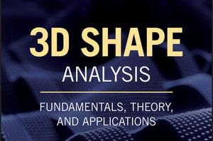
3D Shape Analysis: Fundamentals, Theory, and Applications
John Wiley and Sons. 1-352, 2018.
2015
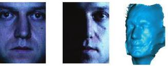
2D and 3D Feature Selection for Face Recognition
Encyclopedia of Electrical and Electronics Engineering. John Wiley and Sons. 1-54, 2015.
Publications
2019
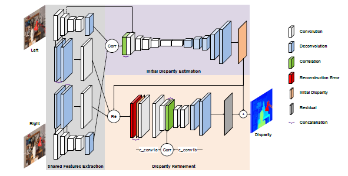
Stereo Matching Using Multi-level Cost Volume and Multi-scale Feature Constancy
IEEE Transactions on Pattern Analysis and Machine Intelligence, 2019.
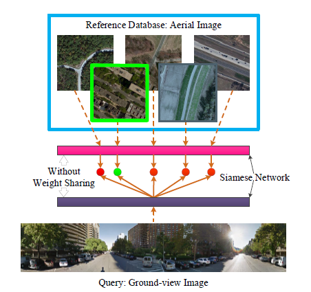
Ground-to-aerial Image Geo-localization with a Hard Exemplar Reweighting Triplet Loss
IEEE International Conference on Computer Vision (ICCV). Oct 27 – Nov 2, Seoul, Korea, 2019.
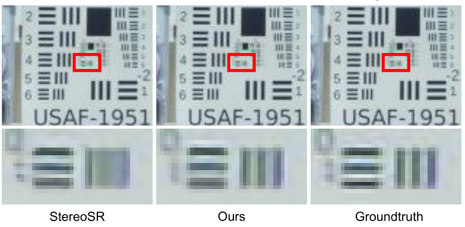
Learning Parallax Attention for Stereo Image Super-Resolution
IEEE International Conference on Computer Vision and Pattern Recognition (CVPR). June 16 – 21, Long Beach, U.S., 2019.
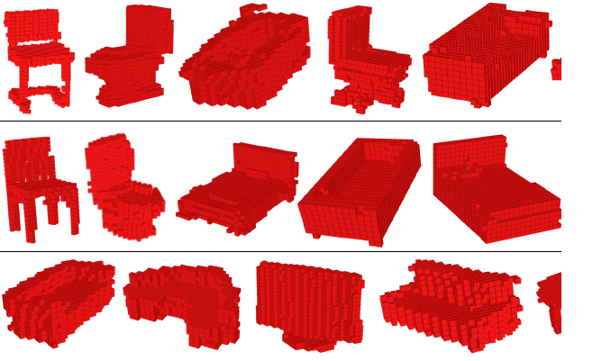
Unsupervised Primitive Discovery for Improved 3D Generative Modeling
IEEE International Conference on Computer Vision and Pattern Recognition (CVPR). June 16 – 21, Long Beach, U.S., 2019.
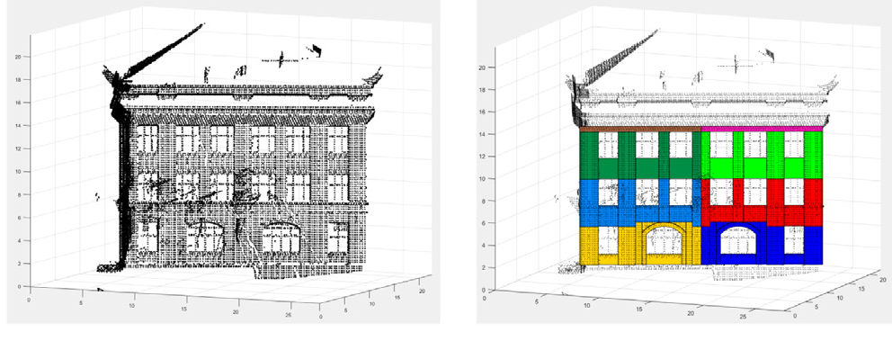
Robust Procedural Model fitting with a New Geometric Similarity Estimator
Pattern Recognition. 85(1): 120-131, 2019
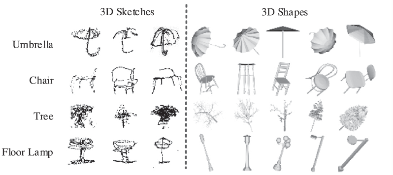
Deep Point-to-subspace Metric Learning for Sketch-based 3D Shape Retrieval
Pattern Recognition, 2019
2018
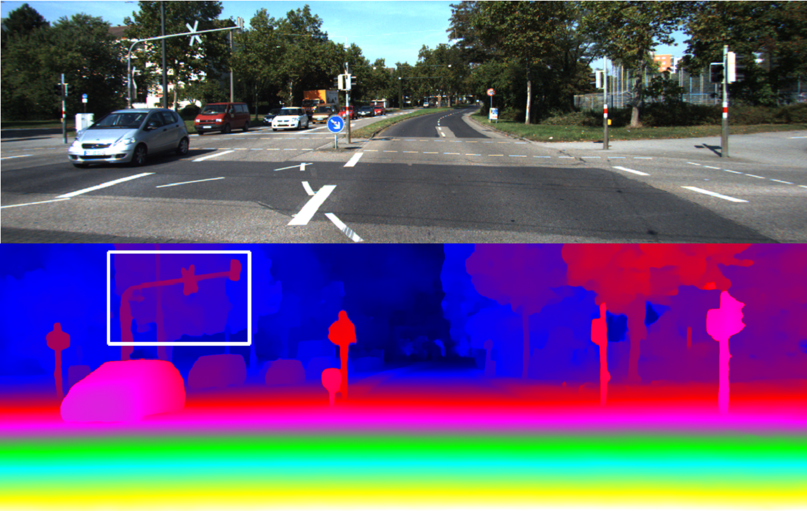
Learning for Disparity Estimation through Feature Constancy
IEEE International Conference on Computer Vision and Pattern Recognition (CVPR), 2018
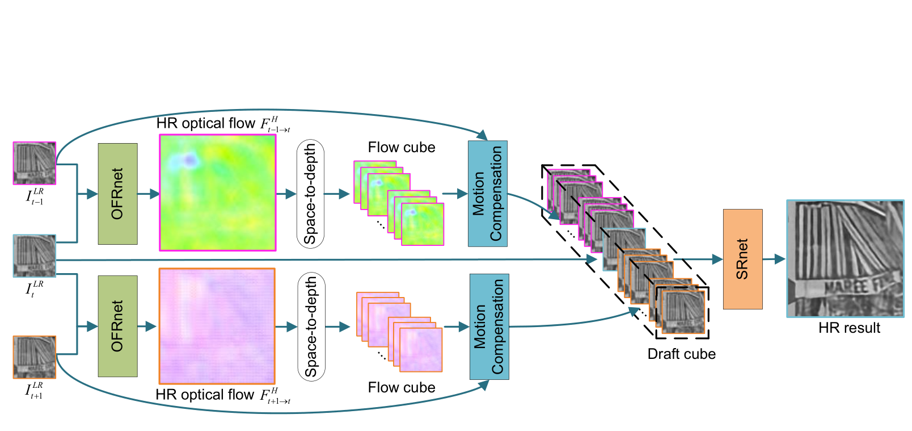
Learning for Video Super-Resolution through HR Optical Flow Estimation
Asian Conference on Computer Vision (ACCV), Dec. 2-6, 2018, Perth, Australia

A Constrained Sparse Representation Model for Hyperspectral Anomaly Detection
IEEE Transactions on Geoscience and Remote Sensing. 2018.
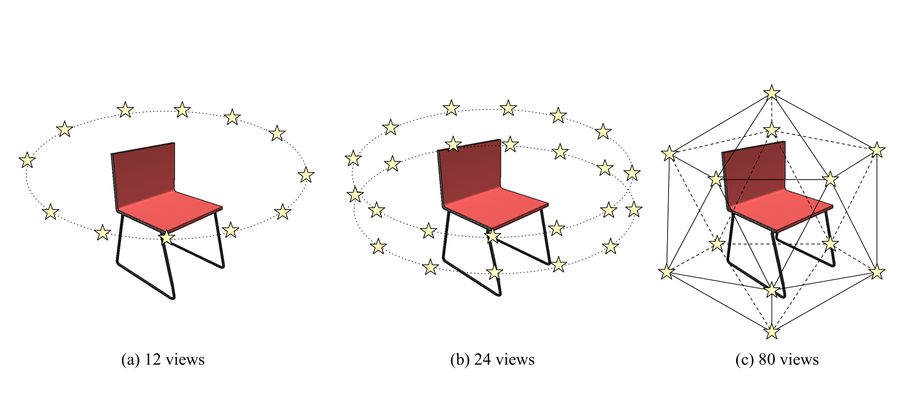
Learning Multi-view Representation with LSTM for 3D Shape Recognition and Retrieval
IEEE Transactions on Multimedia. 2018.
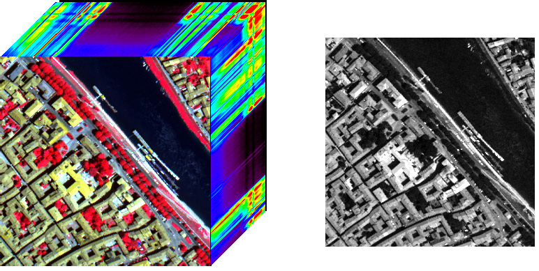
Spatio-Spectral Total Variation Regularized Low-Rank Tensor Decomposition for Hyperspectral Image Denoising
IEEE Transactions on Geoscience and Remote Sensing. 56(10):6196-6213, 2018.
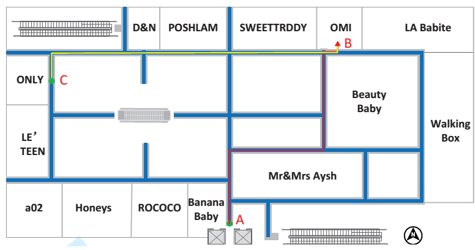
CloudNavi: Towards Ubiquitous Indoor Navigation Service with 3D Point Clouds
ACM Transactions on Sensor Networks, 2018
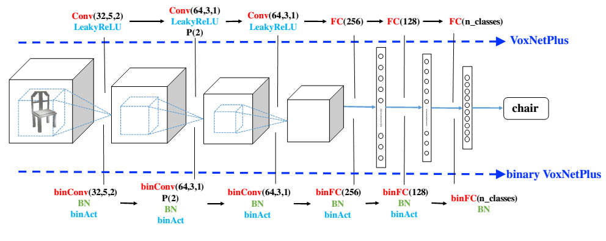
Binary Volumetric Convolutional Neural Networks for 3D Object Recognition
IEEE Transactions on Instrumentation and Measurement, 2018
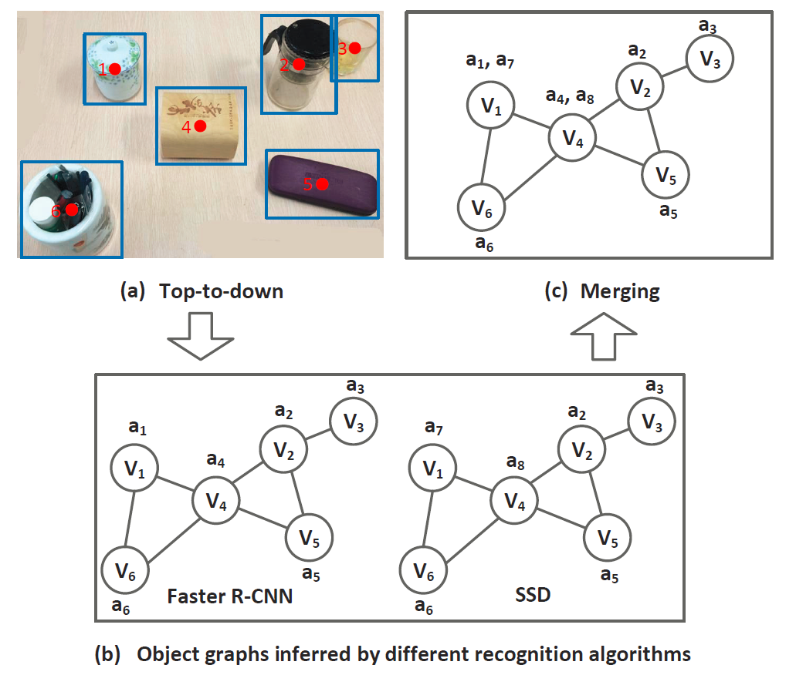
SISE: Self-updating of Indoor Semantic Floorplans for General Entities
IEEE Transactions on Mobile Computing, 2018
2017
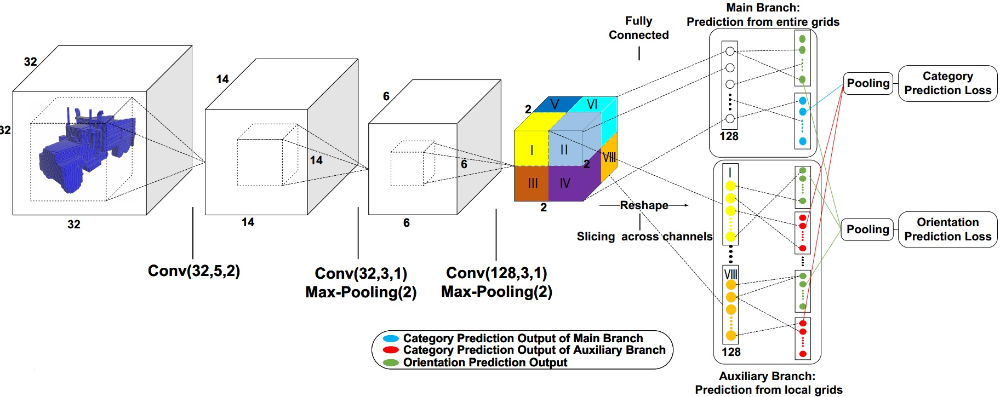
Towards Real-time 3D Object Recognition: A Lightweight Volumetric CNN Framework using Multitask Learning
Computers & Graphics, 2017
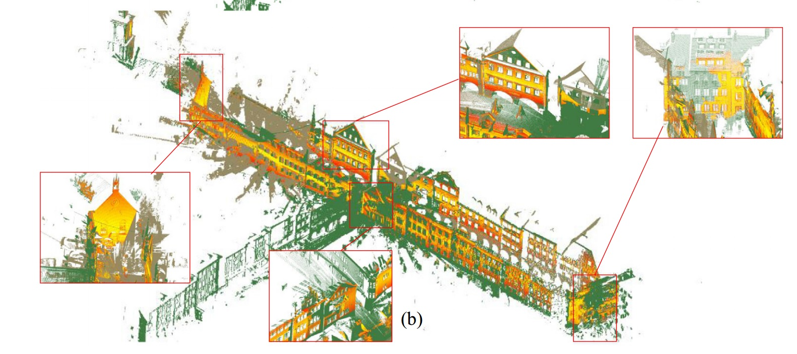
Pairwise Registration of TLS Point Clouds using Covariance Descriptors and a Non-cooperative Game
ISPRS Journal of Photogrammetry and Remote Sensing, 2017
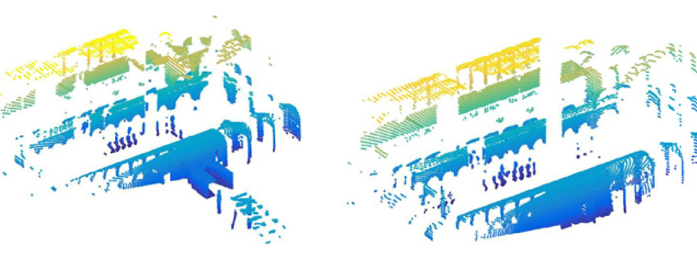
Efficient Rotation Estimation for 3D Registration and Global Localization in Structured Point Clouds
Image and Vision Computingg, 2017
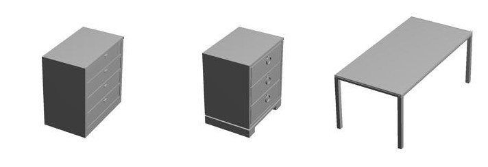
BV-CNNs: Binary Volumetric Convolutional Networks for 3D Object Recognition
British Machine Vision Conference (BMVC), 2017
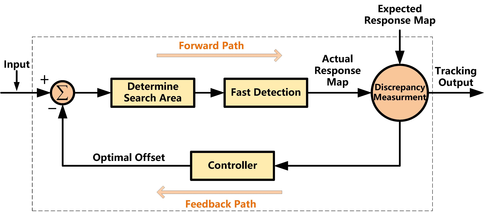
Correlation Filter Tracking: Beyond an Open-loop System
British Machine Vision Conference (BMVC), 2017
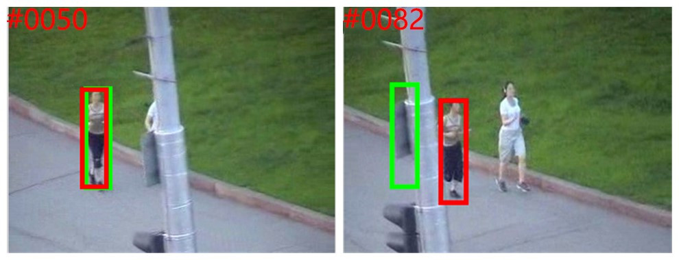
Object Tracking using Multiple Features and Adaptive Model Updating
IEEE Transactions on Instrumentation and Measurement (IEEE TIM), 2017
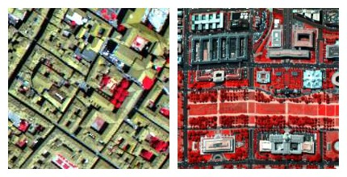
Hyper-Spectral Data Recovery from a Mixture of Gaussian and Sparse Noise based on Tensor Singular Value Decomposition
IEEE Journal of Selected Topics in Applied Earth Observations and Remote Sensing (JSTARS), 2017
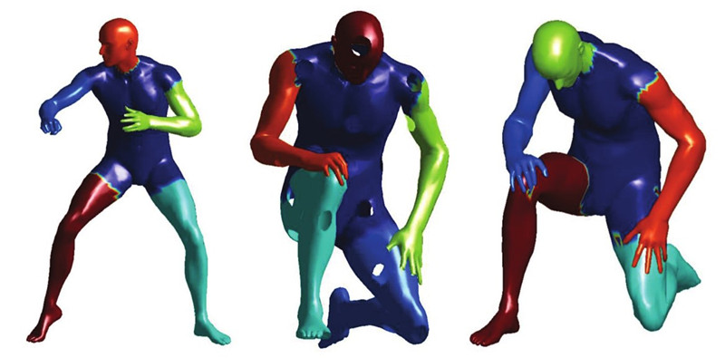
Scale Space Clustering Evolution for Salient Region Detection on Deformable Shapes
Pattern Recognition (PR), 2017
3D Road Boundary Extraction From Mobile Laser Scanning Data via Supervoxels and Graph Cuts
IEEE Transactions on Intelligent Transportation Systems (IEEE TITS), 2017
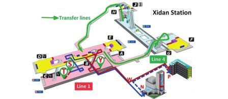
IoNavi: An Indoor-Outdoor Navigation Service via Mobile Crowdsensing
ACM Transactions on Sensor Networks (ACM TOSN), 2017
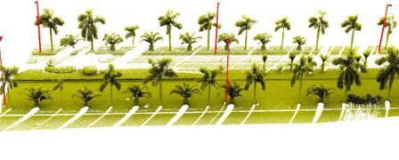
Rapid Localization and Extraction of Street Light Poles in Mobile LiDAR Point Clouds: A Supervoxels-based Approach
IEEE Transactions on Intelligent Transportation Systems (IEEE TITS). 2017 (2): 292-305
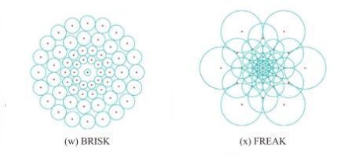
Local Binary Patterns for Texture Classification: Taxonomy and Experimental Study
Pattern Recognition (PR). 2017(2):135-160
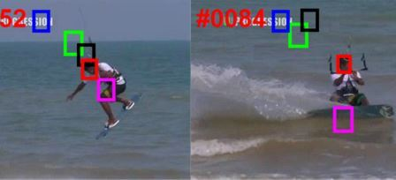
Fast Correlation Tracking using Low-Dimensional Scale Filter and Local Search Strategy
IEEE Access. 2017
2016
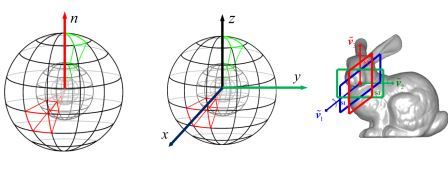
A Comprehensive Performance Evaluation of 3D Local Feature Descriptors
International Journal of Computer Vision (IJCV). 116(1): 66-89. 2016
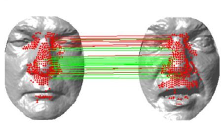
EI3D: Expression-Invariant 3D Face Recognition based on Feature and Shape Matching
Pattern Recognition Letters (PRL). 83(11):403-412, 2016.
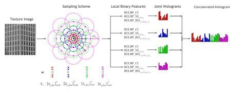
Median Robust Extended Local Binary Pattern for Texture Classification
IEEE Transactions on Image Processing (IEEE TIP). 25(3): 1368-1381. 2016.
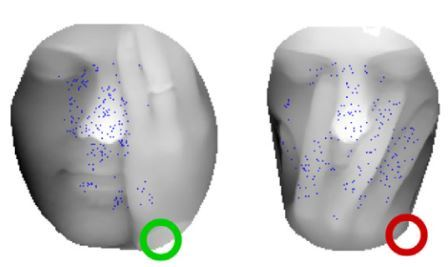
A Two-Phase Weighted Collaborative Representation for 3D Partial Face Recognition with Single Sample
Pattern Recognition (PR). 52(4): 218-237. 2016.
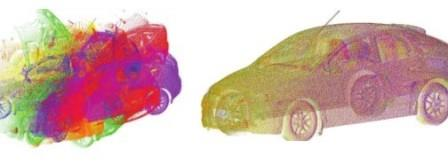
An Accelerated Coherent Point Drift Algorithm for Automatic Three-Dimensional Point Cloud Registration
IEEE Geoscience and Remote Sensing Letters (IEEE GRSL). 13(2): 162-166. 2016.
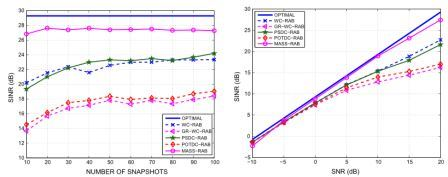
MASS-RAB: Robust Adaptive Beamforming for General-Rank Signal Models via Matched Spatial Spectrum Processing
Applied Acoustics. 2016 (10): 205-213.
2015

A Novel Local Surface Feature for 3D Object Recognition under Clutter and Occlusion
Information Sciences (INS). 293(2): 196-213. 2015
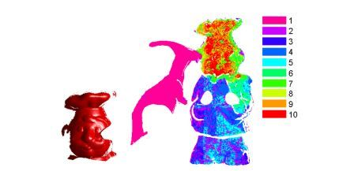
An Integrated Framework for 3D Modeling, Object Detection and Pose Estimation from Point-Clouds
IEEE Transactions on Instrumentation and Measurement (IEEE TIM). 64(3): 683-693. 2015
2014
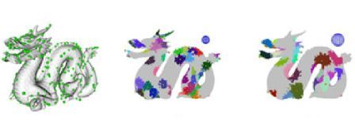
3D Object Recognition in Cluttered Scenes with Local Surface Features: A Survey
IEEE Transactions on Pattern Analysis and Machine Intelligence (IEEE TPAMI). 36(11):2270-2287, 2014
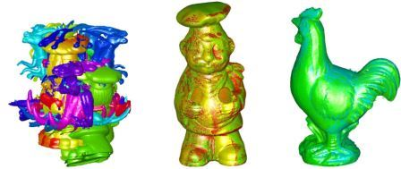
Accurate and Robust Range Image Registration Algorithm for 3D Object Modeling
IEEE Transactions on Multimedia (IEEE TMM). 16(5):1377-1390, 2014
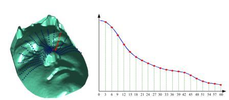
An Efficient 3D Face Recognition Approach using Local Geometrical Signatures
Pattern Recognition. 47(2):509-524. 2014
2013
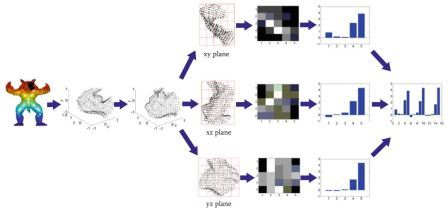
Rotational Projection Statistics for 3D Local Surface Description and Object Recognition
International Journal of Computer Vision (IJCV). 105(1): 63-86. 2013
Talks
2017
3D Scene Understanding in Point Clouds. Tsinghua University, Beijing, China. June, 2017.
2016
3D Computer Vision: For Better Understanding of the Real World. The Summer School on Social Robotics, The University of Electronic Science and Technology of China, Chengdu, China. July, 2016.
Tutorial on 3D Keypoint Detection and Feature Description. IEEE International Conference on Computer Vision and Pattern Recognition (CVPR), Las Vegas, US., 2016.
Services
Associate Editor: IET Computer Vision
Guest Editor: IEEE TPAMI Special issue on RGB-D Vision: Methods and Applications
Workshop Chair: The 3rd CVPR Workshop on Compact and Efficient Feature Representation and Learning in Computer Vision.
Program Committee: AAAI 2020, ICCV 2019, CVPR 2019, ACM MM 2018, AAAI 2018, ICDM 2018, IJCAI 2017
Conference Reviewer: CVPR2019, ICRA2019, IROS2019, BMVC2019, UIC2019, ICPR 2018, ICRA 2018, IROS 2018, IJCAI 2017, SIGGRAPH ASIA 2017, CVPR 2016
Journal Reviewer: IEEE T-PAMI, IJCV, IEEE T-IP, IEEE T-MM, IEEE T-Cybernetics, IEEE T-GRS, IEEE T-ITS, IEEE T-CSVT, IEEE T-ASE, IEEE CIM, IEEE JSTARS, IEEE SPL, IEEE RAL, IEEE GRSL, IEEE J-BHI, IEEE Access, IET RSN, IET IP, PR, PRL, CVIU, NUECOM, SPIC, CAD, OExp, AO, OE, JEI, JARS, FCS, Automation in Construction, Optics and Laser Technology
Awards & Honors
2018 The 1st Prize in the Category of Stereo in Robust Vision Challenge, CVPR2018
2016 National Postdoctoral Program for Innovative Talents
2016 CAAI Outstanding Doctoral Dissertation Award (9 in China)
2015 NUDT Outstanding Doctoral Dissertation Award (5 out of 300+)
2014 NUDT Postgraduate Academic Innovation Star
2011 GuangHua Scholarship
2009 GuangHua Scholarship
2009 Excellent Postgraduate Innovation Fund
2011-2013 CSC Scholarship
2016 CAAI Outstanding Doctoral Dissertation Award (9 in China)
2015 NUDT Outstanding Doctoral Dissertation Award (5 out of 300+)
2014 NUDT Postgraduate Academic Innovation Star
2011 GuangHua Scholarship
2009 GuangHua Scholarship
2009 Excellent Postgraduate Innovation Fund
2011-2013 CSC Scholarship
Alumni
Xiaoqiang Teng (PhD, 2015-2018) Now with DiDi Lab, China
Yanxin Ma (PhD, 2014-2018) Now with NUDT, China
Dawei Zai (PhD, 2014-2018) Now with a startup company, Canada
Qingyong Hu (Msc, 2015-2017) Now with Oxford University, UK
Shuaifeng Zhi (Msc, 2015-2017) Now with Imperial College London, UK
Zhiheng Fu (Msc, 2015-2017)
Xiuzi Xiao (Msc,2014-2017) Now with Huawei Technologies, China
Wenguang Zhang (MSc, 2013-2015) Now with HIKVision, China
Yanxin Ma (PhD, 2014-2018) Now with NUDT, China
Dawei Zai (PhD, 2014-2018) Now with a startup company, Canada
Qingyong Hu (Msc, 2015-2017) Now with Oxford University, UK
Shuaifeng Zhi (Msc, 2015-2017) Now with Imperial College London, UK
Zhiheng Fu (Msc, 2015-2017)
Xiuzi Xiao (Msc,2014-2017) Now with Huawei Technologies, China
Wenguang Zhang (MSc, 2013-2015) Now with HIKVision, China

Last updated: 2017-4-5